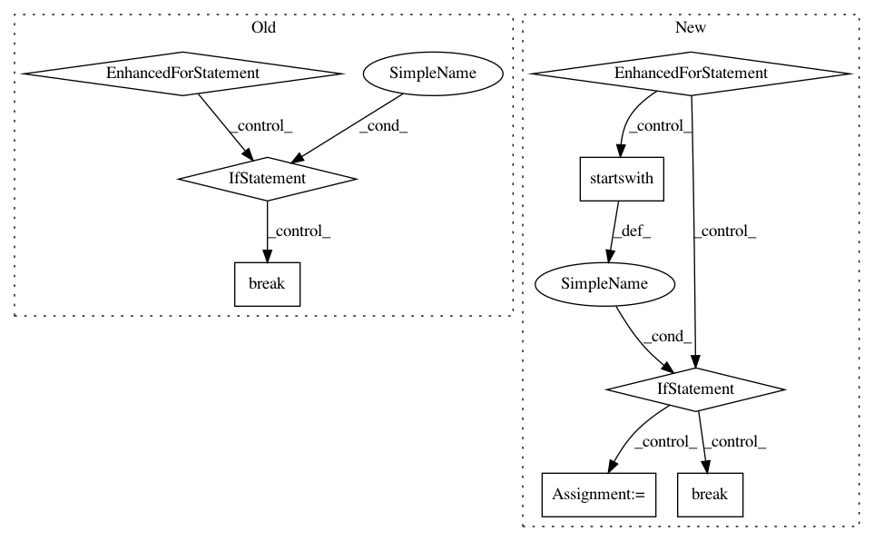

a3afe1f4fbeffa7f64ee6e11cff95417c742299e,tests/unit/test_depend_utils.py,,test_ldconfig_cache,#,34
Before Change
// If somebody has a better idea which library to test for, feel
// free to enhance this code.
utils.load_ldconfig_cache()
for name in PYDYLIB_NAMES:
lib = utils.LDCONFIG_CACHE.get(name)
if lib:
break
assert lib, "Neither of %s found" % ", ".join(PYDYLIB_NAMES)
After Change
def test_ldconfig_cache():
utils.load_ldconfig_cache()
libpath = None
for soname in utils.LDCONFIG_CACHE:
if soname.startswith("libc.so."):
libpath = utils.LDCONFIG_CACHE[soname]
break
assert libpath, "libc.so not found"
assert os.path.isfile(libpath)
In pattern: SUPERPATTERN
Frequency: 3
Non-data size: 8
Instances
Project Name: pyinstaller/pyinstaller
Commit Name: a3afe1f4fbeffa7f64ee6e11cff95417c742299e
Time: 2015-11-22
Author: h.goebel@crazy-compilers.com
File Name: tests/unit/test_depend_utils.py
Class Name:
Method Name: test_ldconfig_cache
Project Name: Qiskit/qiskit-aqua
Commit Name: cfa2566a4e464b2ad1c22cf179dd8e0045d1dbb0
Time: 2018-10-01
Author: manoel@us.ibm.com
File Name: qiskit_aqua/quantumalgorithm.py
Class Name: QuantumAlgorithm
Method Name: register_and_get_operational_backends
Project Name: kmike/pymorphy2
Commit Name: 837b2efde71507b09033c3ea6f2502e2306f8eef
Time: 2013-02-18
Author: kmike84@gmail.com
File Name: pymorphy2/analyzer.py
Class Name: MorphAnalyzer
Method Name: _tag_as_word_with_known_suffix